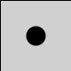
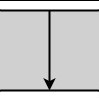
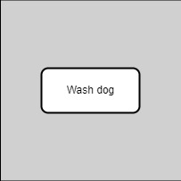
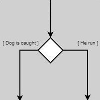
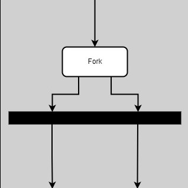
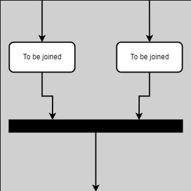
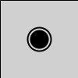
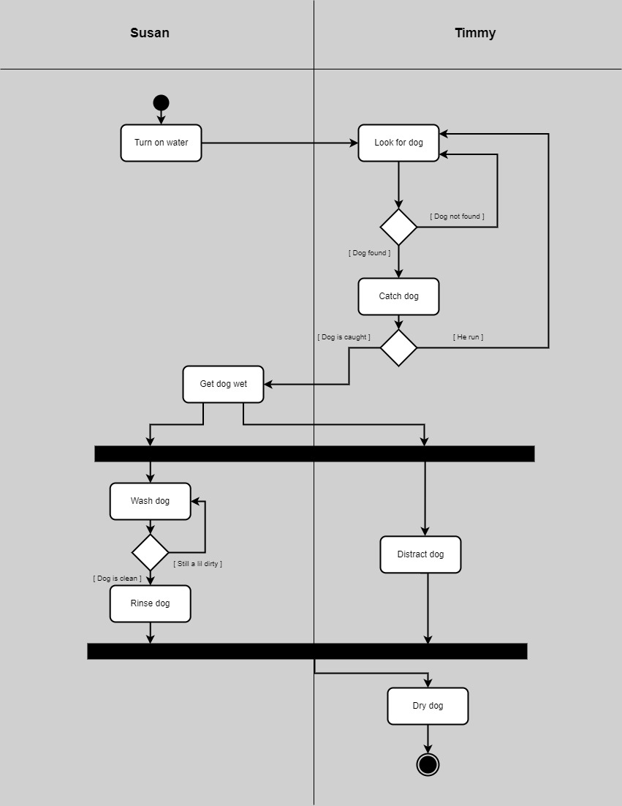

There are only a few UML symbols associated with activity diagrams.

There is the initial node, represented by a solid black circle. This marks the start of the activity diagram, where all activites will stem from.

Next there are arrows, which show the flow of control from one activity to the next.

Then, there are the activity nodes themselves, represented by rounded rectangles labeled with their respective activities.

Diamonds represent decision nodes, which split the path into two or more possible paths depending on the outcome of the last activity.


Horizontal black bars are used in both forks and joins, where the path splits into two or more paths with activities that happen concurrently,
or where concurrent paths become one again, respectively.

The final node is a solid black circle outlined with a black ring, and that marks the end of the activity diagram. By then, the process should have reached an expected conclusion.
One other component that an activity diagram can have is swimlanes. These separate the diagram by actor, which as mentioned before isn't necessarily important to
this type of diagram. However, some may find it useful to know who is performing what activity, especially when the path forks into concurrent activities.

In this rendition of the dog wash example, swimlanes have been added to show who was responsible for which role in the process. The two of them worked together, sometimes at the same time,
in order to successfully wash the dog. Remember, the focus isn't on who is who is in control of each activity, but on the activity that is in control of where the process is currently at.